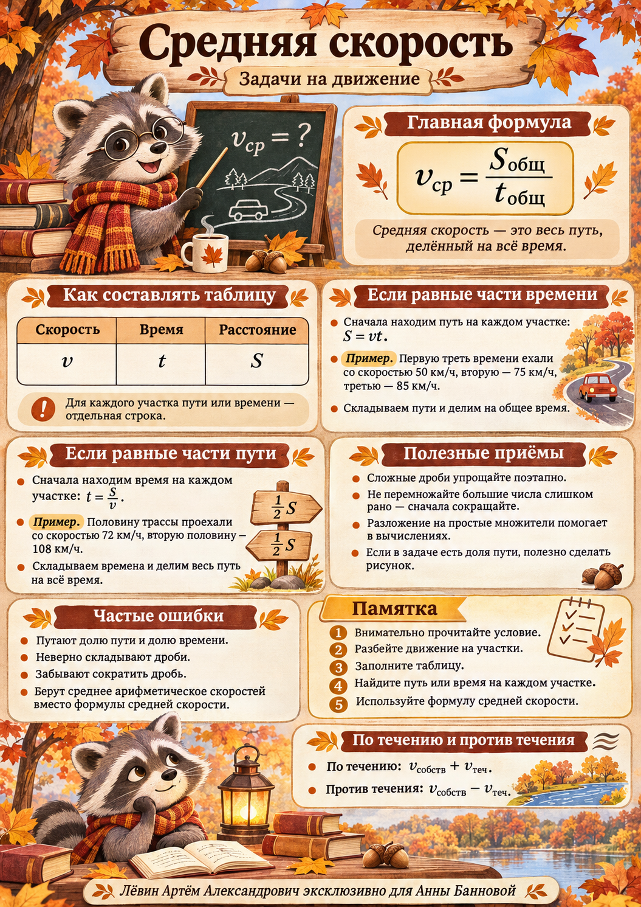

Занятие 13.11.2026 / маршрут движения
Средняя скорость
Половина времени или половина пути? Одна формула приводит к разным вычислениям. Разберём таблицу «скорость — время — расстояние», доли маршрута, дроби и движение по реке.

Общая формула
Для каждого участка движения существуют три связанные величины: S = vt, t = S/v, v = S/t. Если в общую длительность поездки включена остановка, её время тоже входит в знаменатель.
| Участок | Скорость | Время | Путь |
|---|---|---|---|
| Первый | v1 | t1 | S1 |
| Второй | v2 | t2 | S2 |
| … | … | … | … |
Главный вопрос к условию: на равные части разделили время или расстояние? От этого зависит, какую колонку таблицы заполняем первой.
Равные промежутки времени и равные участки пути
Сравните два случая из занятия. Переключайте разбиение и проследите, какая величина остаётся постоянной.
Среднее арифметическое двух скоростей применимо при равных временах. При равных расстояниях медленный участок занимает больше времени.
Пример. Половины дороги
72 км/ч на первой половине трассы и 108 км/ч на второй. При полном пути S время равно S/144 и S/216.
vср = S / (S/144 + S/216) = (144 · 216) / 360 = 86,4 км/ч.
Как справиться со сложной дробью
Когда в формуле средней скорости появляется дробь, деление на дробь заменяем умножением на обратную. Число можно представить дробью со знаменателем 1.
До перемножения крупных чисел разложите их на простые множители и сократите. Для примера с 72 и 108 км/ч используются:
После сокращения: (16 · 27) / 5 = 86,4. Сокращать можно общие множители числителя и знаменателя; отдельные слагаемые суммы сокращать нельзя.
Три участка движения
Три равные трети времени
Скорости: 50, 75 и 85 км/ч. При общем времени T каждая часть длится T/3; пути равны 50T/3, 75T/3 и 85T/3.
Разная продолжительность
Первый участок — 2 часа по 55 км/ч; второй — 1 час по 70 км/ч; третий — 3 часа по 90 км/ч.
Количество строк таблицы определяется количеством участков, описанных в условии.
Часть дороги пройдена. Сколько осталось?
Если водитель прошёл треть пути S со скоростью 60 км/ч, на оставшиеся две трети пути со скоростью 80 км/ч придётся большее расстояние.
S − S/3 = 2S/3.
Времена движения: S/180 и S/120. Средняя скорость:
После четверти пути остаются три четверти: S − S/4 = 3S/4. Если сложно увидеть долю, нарисуйте весь маршрут и отметьте пройденную часть.
По течению и против течения
vпротив = vсобств − vтеч
При собственной скорости катера 22 км/ч и течении 2 км/ч по течению скорость относительно берега составляет 24 км/ч, против течения — 20 км/ч. За 6 часов по течению катер пройдёт 144 км; за 2 часа против течения — 40 км.
(144 + 40) / (6 + 2) = 23 км/ч.
Порядок решения
- Определите участки движения и известные величины.
- При необходимости скорректируйте скорость с учётом течения.
- Если задано время — найдите путь; если задан путь — найдите время.
- Сложите расстояния и времена по отдельности.
- Найдите среднюю скорость и проверьте единицы измерения.
Тренировочный блок
10 задач из пособия. Условия приведены полностью, по нарастанию сложности. Сначала решите самостоятельно и составьте таблицу «скорость — время — расстояние», затем раскройте ответ.
Плакат-памятка

Средняя скорость с осенним енотом
Иллюстрированная памятка помогает быстро восстановить основные правила и типичные ошибки. Откройте постер отдельно для увеличения.